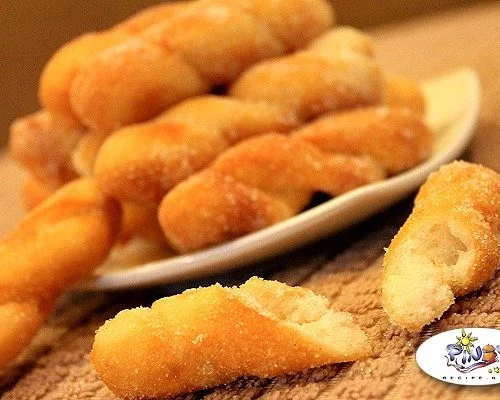

Shakoy

Description
Shakoy is a Filipino donut that is twisted, fried, and coated in sugar! Soft and fluffy- the aroma of these delightful Filipino donuts will remind you of the donuts sold at your local neighborhood bakery!
Ingredients
- ½ cup warm water
- ¾ teaspoons yeast
- pinch sugar to activate the yeast
- 1 ½ cups all purpose flour
- ½ teaspoon salt
- ¼ cup sugar
- 1 cup oil for frying
Instructions
- In a cup add the warm water, yeast and pinch of sugar to active the yeast and allow it to sit for 5 minutes.
- In a large bowl add the flour, salt, and whisk until well combined.
- Add the yeast water and mix until elastic, smooth, and form into ball. Add all purpose flour if dough is sticky.
- Grease bowl and place the dough in the bowl and cover with plastic wrap and allow it to sit for at least 1 hour or double in size. Make sure to keep it away from any breeze and in a warm place.
- After an hour, punch the dough and allow it to sit for 5 minutes. Place dough on floured surface and knead for 5 minutes.
- Break into 1-2 inch balls and form into long sticks about 1 foot, then twist.
- Cover and set aside for 1 hour, then prepare to fry using 1 cup of oil and the fire on medium high.
- Fry on both sides until light brown, about 30 seconds. Then place on paper towels to dry the oil and immediatly onto the sugar and coat.
Home